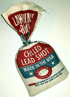
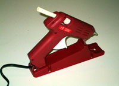

Bonsai Kitten Kids®
Hey kids! Make your own
imitation
Bonsai Kitten Picture Frame!
So easy to do, and no license
is required!

While Mom and Dad worked on your real Bonsai Kitten, you joined in the fun with a Bonsai Kitten tissue box cosy for Mom -- now start on a Bonsai Kitten picture frame for Dad, just in time for Father's Day!
Or if he hasn't started your own Bonsai Kitten yet, why not brighten up Dad's nightstand or mantlepiece as a gentle hint!
He will always think of you as he strokes the soft fur, even after you're all grown up!
Supplies:

- 20" x 12" piece of cat pelt (or craft fur for greater color variety)



- Lead shot
- Hot glue
- Preserved or imitation cat face pieces (try to coordinate eye color with fur color)
- Cat paws if the pelt does not have them attached
Tools Required:
- Knife, scissors, paw and tail removal shears
- Hot glue gun
- Ruler
- Crayon




1. Lay the pelt, fur side down, on a work surface. Use the crayon and ruler to trace the width of the sides of the picture frame in even stripes on the pelt. Turn the pelt over and use scissors to cut the pelt into strips.

2. If the edges of the pelt are uneven, carefully trim the strips with the scissors. If the paws and tail are attached, remove them with the shears. Watch your fingers! Ask Mom if you need help with this step.

3. Carefully measure the pelt strips, and mark where they should be cut into pieces to fit around the frame. Use the knife to slice the pelt, from the skin side. Cut at an angle, for best fur overlap.

4. If your hot glue gun has a temperature control, put it on the highest setting. Use the gun to put a line of glue down each side of the picture frame, and then press on each pelt piece.

5. Proper balance is needed to help the picture frame stand upright. Put a line of hot glue on the back of the picture frame, and leave it until it is nearly cool. Moisten some lead shot with a little saliva, and push it into the soft glue until the frame is balanced. Attach the face pieces and paws. Brush the fur neatly, and sprinkle with flea powder if necessary.
Contact the Bonsai Kitten
webmaster!